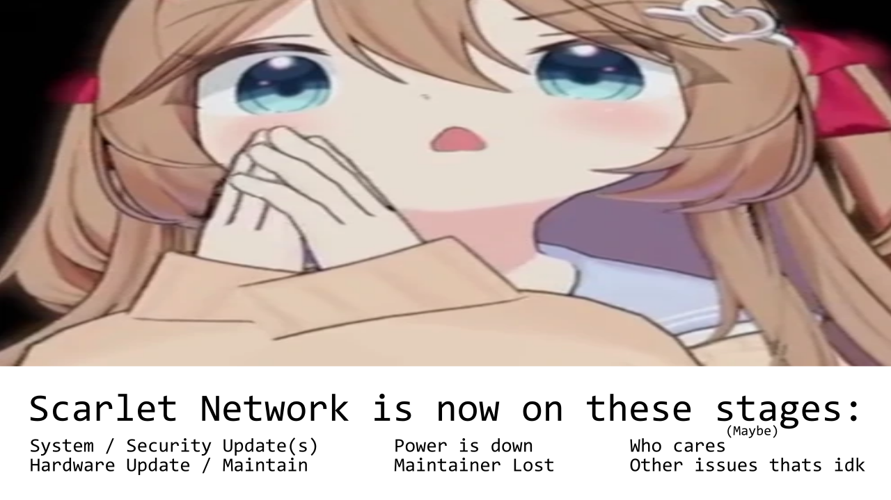
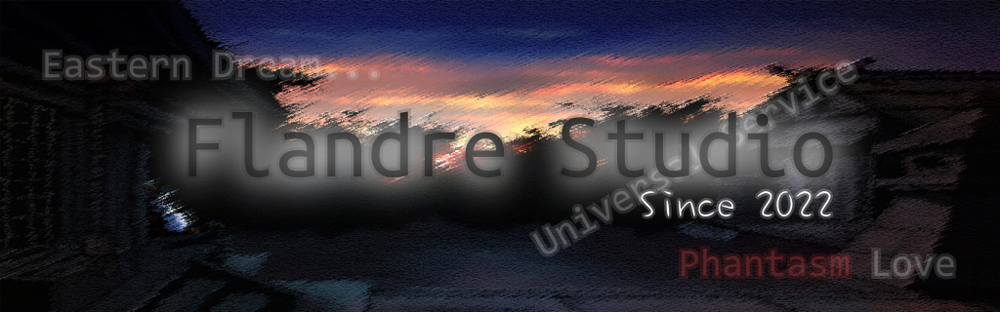
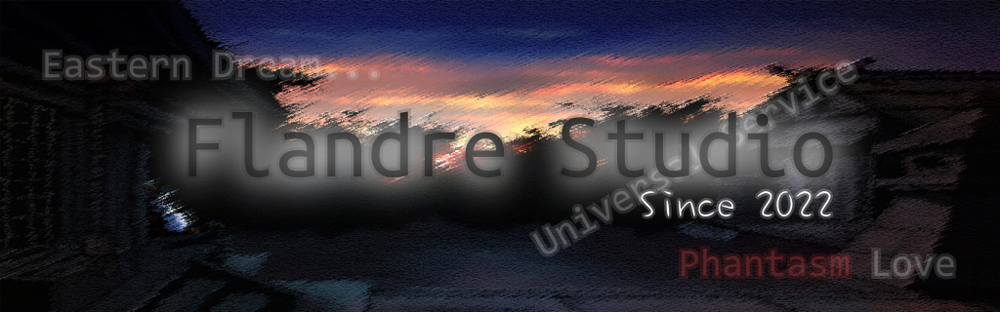

Flandre Studio Since 2022by Yartmin Scarlet and Antarctic Flakes |
| 常用链接 | 主要内容 | 广而告之等 | ||
|
Main 捐款列表关于本社以及我们是谁 二创规约及协议 Projects VoidFlan Project IIOther Stuff Yartmin Scarlet 个人网站Yartmin 的赤色之乐 |

<Flandre Studio Latest News>2025/11/20 Scarlet Network 服务现已暂时停止，由于硬件升级。 <Projects>VoidFlan Project -- 一个类dos的假操作系统，用 Python 3 语言开发。 (link) <Scarlet Network>IRC:sq2.mossfrp.cn/mfrp.minqwq.moe:42365 with no SSL <The "Source" Box 起源之箱>好奇 Scarlet Network 使用的是什么服务器？ 如果您要在您的网站上添加我个人社团的链接， 请使用这张图 <img src="http://minqwq.github.io/flanstd/banner.png" width="200" height="40">，嵌套在<a>内即可。 |
 

|
|
(C)opyright Flandre Studio 2025--2026 All rights reserved. |
Website(v3.02b) by Yartmin Scarlet, Source Code |